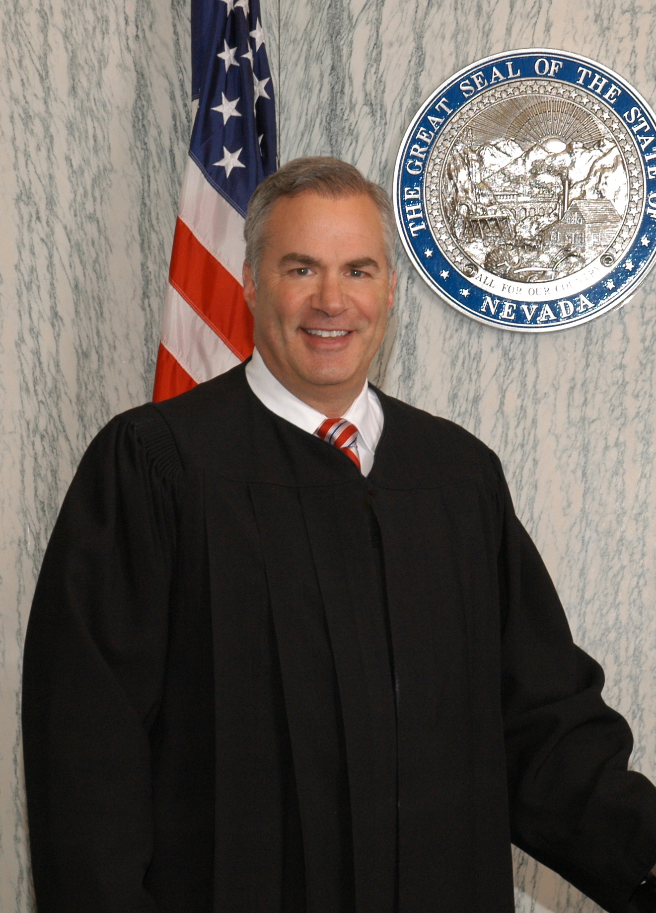

Department 9
Honorable
Scott N. Freeman
(775)328-3162
Judicial Assistant: Brianne Buzzell
Court Clerk: Linda Lopez
Court Clerk: Greg Bartlett
Law Clerk: Richard Viloria
Court Reporter: Susan Kiger (775)376-2850

CLICK HERE TO VIEW CALENDAR SETTINGS FOR A PARTICULAR CASE ON A PARTICULAR DAY. (THIS WILL OPEN A NEW WINDOW AND TAKE YOU TO CASE INQUIRY).Biography
Judge Scott Freeman was appointed by Nevada Governor Brian Sandoval to serve as the presiding Judge in Department 9 on March 26, 2012. In November 2012, his appointment was confirmed by the voters of Washoe County when he successfully retained his seat by popular election.
Judge Freeman graduated from Ithaca College, Ithaca, New York, with a degree in Politics and a minor in Economics. Thereafter, he received his Juris Doctorate from Southwestern University School of Law, Los Angeles, California. Judge Freeman has been a resident of Northern Nevada since 1979.
He commenced his law career in 1984, working with attorney David R. Houston. In 1986, the firm became known as Houston and Freeman, until 1994 when Judge Freeman commenced a solo law practice emphasizing the representation of individuals accused of crime. His private law practice included extensive civil and criminal trial, appellate and administrative law experience.
In 1993, Judge Freeman was appointed Pro Tem Family Court Master and Pro Tem Juvenile Court Master by the Second Judicial District Court. In 1995, he was appointed by the Reno Municipal Court to serve as a Pro Tem Judge up to and including the time he was appointed to the Second Judicial District Court by Governor Sandoval.
Judge Freeman spent 28 years in private practice and has received numerous awards and distinctions. In 2008, he was awarded 'Defender of the Year' by the statewide Nevada Attorneys for Criminal Justice. In 2012, he received the Best Lawyers in America award. He has received the 2009, 2010, 2011 and 2012 Mountain States Super Lawyer awards. In 2009, he was named a fellow of the American Board of Criminal Lawyers. From 1999-2012, he has been AV-rated by the international lawyer directory Martindale Hubble. In 2007, he was Las Vegas Life Magazine Super Lawyer Best Criminal Attorney In Nevada. In 2002, he was Nevada Business Magazine Super Lawyer Best Criminal Attorney In Nevada. In 1999, he was the first recipient of the Washoe County Access To Justice Foundation's Pro Bono Attorney Of The Year award.
Judge Freeman was also appointed by the State Bar of Nevada to be a permanent member on the Commission for Judicial Selection from 2008-2011. He was the Nevada Law Foundation Chairman of the Board of Trustees from 1998-2000. He was the criminal justice representative on numerous law related committees, including the Washoe County Public Defender Selection Committee, Washoe County Alternative Public Defender Selection Committee, Nevada Criminal Jury Instructions Committee, Washoe District Court Pattern Criminal Jury Instructions Committee, Washoe District Court Criminal Rules Committee, and the Nevada Mandatory Sentencing Review Commission. Judge Freeman has also been a lecturer of numerous topics at seminars sponsored by the State Bar of Nevada, Washoe County Bar Association and local universities and high schools.
Judge Freeman is most proud of his work in the community. He is a member of the Rotary Club of Reno Sunrise. He has been a member of the Board of Trustees for the Children's Cabinet since 1999. In 2003, he was appointed Chairman of the Board of Trustees for the Children's Cabinet. He was also active with the international Special Olympics. From 1999 to the present, he has been the Director of Security for the Reno Tahoe Open annual PGA Tour event at the Montreaux Golf and Country Club. Since 2002, he has been a Lieutenant of the Washoe County Sheriff's Honorary Deputies Association.
Judge Freeman was formerly a co-host of the weekly television show Lawyers, Guns & Money for over 16 years, with an interview format of notable personalities in the legal, cultural and charitable communities.
Judge Freeman enjoys spending time with his two children, playing recreational ice hockey and long distance bicycle riding.
Calendar Information for the next 14 days
| Start Time | Case Number & Description | Event Description | Oct-20-2014 |
| 1. 08:44 AM | CV12-01562 - SHIEN WANG ET AL VS DR DIMITROV ET AL (ARB) | Request for Submission |
| 2. 09:00 AM | CR13-0357 - STATE VS. JENNIFER SHAUN BOISE (D9) | MOTION -PROBATION REVOCATION |
| 3. 09:00 AM | CR13-1221 - STATE VS. SCOTT P. LYDA (TN) (D9) | MOTION -PROBATION REVOCATION |
| 4. 09:00 AM | CR14-0721 - STATE VS. MICHAEL JAMES DRAGOS (TN) (D9) | SENTENCING |
| 5. 09:00 AM | CR14-1548 - STATE VS. JORDAN N. GALLEGOS (D9) | ARRAIGNMENT |
| 6. 09:00 AM | CR14-1182 - STATE VS. SCOTT PERRY LYDA (TN) (D9) | SENTENCING |
| 7. 09:00 AM | CR14-1422 - STATE VS. MICHAEL JAMES DRAGOS (D9) | SENTENCING | Oct-21-2014 |
| 8. 08:30 AM | CR14-1246 - STATE VS. THOMAS MICHAEL MORET (TN) (D3) | SENTENCING |
| 9. 08:30 AM | CR14-1153 - STATE VS. BRIAN RICHARD KEITH II (TN) (D3) | SENTENCING |
| 10. 08:30 AM | CR12-1844 - STATE VS. TESSA ROSE GARCIA (TN) (D3) | MOTION -PROBATION REVOCATION |
| 11. 08:30 AM | CR14-1450 - STATE VS. TESSA ROSE GARCIA (D3) | SENTENCING |
| 12. 08:30 AM | CR14-1264 - STATE VS. ALEX DELACRUZ (D3) | SENTENCING |
| 13. 08:30 AM | CV14-02036 - IN RE: ISAIAH BERNARD WILLIAMS (D3) | REPORT PSYCHIATRIC EVALUATION |
| 14. 08:30 AM | CR14-0333 - STATE VS. MICHAEL HOWARD RACHLIN (TN) (D3) | MOTION TO SET TRIAL |
| 15. 08:30 AM | CV14-01849 - IN RE: ROBIN ELISE AGUIAR (D3) | REPORT PSYCHIATRIC EVALUATION |
| 16. 08:30 AM | CR14-1216 - STATE VS. SHANE DONEVEN BULLIG (TN) (D3) | SENTENCING |
| 17. 08:30 AM | CR14-0111 - STATE VS. BRIAN PAUL DUNCAN (D3) | SENTENCING | Oct-27-2014 |
| 18. 09:00 AM | CV14-02089 - IN RE: PIERRE MARQUIS DYSON (D9) | REPORT PSYCHIATRIC EVALUATION |
| 19. 09:00 AM | CR14-1258 - STATE VS. THAILER JOSHUA SMITH (TN)(D9) | SENTENCING |
| 20. 09:00 AM | CR14-1570 - STATE VS. WILLIAM LEE PACE (D9) | ARRAIGNMENT |
| 21. 09:00 AM | CR14-0984 - STATE VS THAILER JOSHUA SMITH (D9) | SENTENCING |
| 22. 09:00 AM | CR11-0258 - STATE VS. CRAIG STEVEN WALTERS (D9) | MOTION -PROBATION REVOCATION |
| 23. 09:00 AM | CR14-1572 - STATE VS. TIMOTHY MANUEL TRUJILLO (D9) | ARRAIGNMENT | Oct-29-2014 |
| 24. 09:00 AM | CR14-1604 - STATE VS. CICELY ROSE SPOHN (D9) | ARRAIGNMENT |
| 25. 09:00 AM | CR14-1323 - STATE VS CANDACE MARGARET BECKNER (TN) (D9) | SENTENCING |
| 26. 09:00 AM | CR14-1601 - STATE VS. CODY JOE GOODROW (D9) | ARRAIGNMENT |
| 27. 09:00 AM | CR14-1581 - STATE VS. SUSAN MARIE GOLAY (D9) | ARRAIGNMENT |
| 28. 09:00 AM | CR14-1465 - STATE VS. ROBERT MAURICE MAXWELL (TN) (D9) | MOTION TO CONFIRM TRIAL |
| 29. 09:00 AM | CR14-1591C - STATE VS. BRANDON TRACY MCGUIRT (D9) | ARRAIGNMENT |
| 30. 09:00 AM | CR14-1591A - STATE VS. CESAR MANJARREZ (D9) | ARRAIGNMENT |
| 31. 09:00 AM | CR14-1305 - STATE VS. RUBEN CARRILLO-DAVALOS (D9) | ARRAIGNMENT |
| 32. 09:00 AM | CR14-1588 - STATE VS. DAVID WAYNE MILLS (D9) | ARRAIGNMENT |
| 33. 09:00 AM | CR14-1591B - STATE VS. SEARRA ROBBINS (D9) | ARRAIGNMENT |
| 34. 10:00 AM | CV10-03610 - CONNIE CASALLAS ETAL VS. BARKER-COLEMAN (D9) | STATUS HEARING |
| 35. 10:30 AM | CR13-0638 - STATE VS JAVIER ANGEL SALDANA (D9) | TRIAL - JURY |
| 36. 13:30 PM | CV14-01197 - HSBC BANK USA, VS. CHARLENE L. AZUCENA (D6) | ORAL ARGUMENTS | Oct-30-2014 |
| 37. 10:00 AM | CV14-00821 - ANDERSON, FRANK & MACK ET AL VS TRI STATE ET AL D9 | ORAL ARGUMENTS |
| 38. 13:30 PM | CV11-00819 - CITY NATIONAL BANK VS. NELLO GONFIANTINI (D6) | ORAL ARGUMENTS | Nov-03-2014 |
| 39. 09:00 AM | CV14-02117 - IN RE: SCOTT MICHAEL COSTELLO (D9) | REPORT PSYCHIATRIC EVALUATION |
| 40. 09:00 AM | CR14-0324 - STATE VS. DWAYNE MAURICE BAYARD (D9) | ARRAIGNMENT |
| 41. 09:00 AM | CR14-1616 - STATE VS. MARTIN ELLIS GEORGE (D9) | ARRAIGNMENT |
| 42. 09:00 AM | CV10-03610 - CONNIE CASALLAS ETAL VS. BARKER-COLEMAN (D9) | TRIAL - JURY |
| 43. 09:00 AM | CR14-1608 - STATE VS. RONALD JEFFREY VAUGHN (D9) | ARRAIGNMENT |
Calendar Information for the next 14 days
| Start Time | Case Number & Description | Event Description | Nov-03-2014 |
| 1. 09:00 AM | CV13-02162 - ROBERT R. HAGER VS TREVA HEARNE (B9) | TRIAL - JURY |